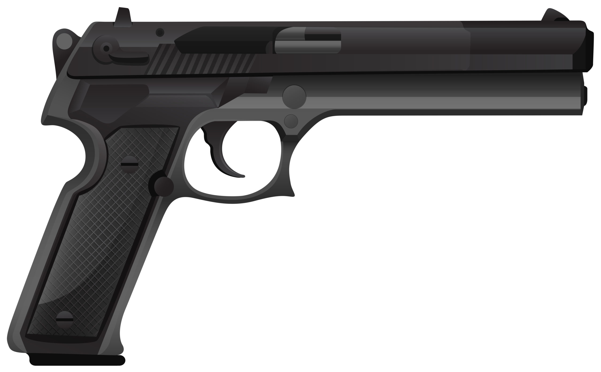

Servicio · Intervención de Armas
Licencia de armas en Gijón y Oviedo
Certificado médico-psicológico oficial para la obtención y renovación de licencias de armas, conforme al Reglamento de Armas (RD 137/1993).

Tipos de licencia para los que emitimos certificado
- Licencia A: agentes y funcionarios autorizados.
- Licencia B: armas cortas para uso particular (seguridad).
- Licencia C: personal de seguridad privada.
- Licencia D: armas largas rayadas para caza mayor.
- Licencia E: armas largas lisas para caza menor y deporte (escopeta).
- Licencia F: tiro deportivo federado.
- Licencia AC: armas de aire comprimido.
- Tarjetas de armas: categorías 4ª.1 y 4ª.2.
¿Qué evaluamos?
- Capacidad visual y discriminación cromática.
- Capacidad auditiva.
- Pruebas psicotécnicas: atención, control emocional, equilibrio psíquico.
- Sistema cardiovascular, locomotor y neurológico.
- Cuestionario de salud y antecedentes.
¿Qué necesitas traer?
- DNI o NIE en vigor.
- Gafas o lentillas si las usas.
- Si renuevas: licencia actual (orientativo).
- No necesitas foto: te la hacemos en el momento.
Vigencia del certificado
El certificado tiene validez de 3 meses a efectos de su presentación ante la Intervención de Armas de la Guardia Civil. Una vez emitida la licencia, esta tiene su propia vigencia (generalmente 5 años para licencias B, D, E y F).
Preguntas frecuentes
¿Necesito pedir cita?
No. Atendemos sin cita previa en ambos centros.
¿Cuánto dura el reconocimiento?
Aproximadamente 20-30 minutos.
¿El certificado vale para Intervención de Armas?
Sí, es el certificado oficial requerido por la Intervención de Armas de la Guardia Civil.
¿Tramitan la licencia ante la Guardia Civil?
Nosotros emitimos el certificado médico-psicológico. La solicitud de la licencia se presenta posteriormente en Intervención de Armas, donde te pedirán este documento.